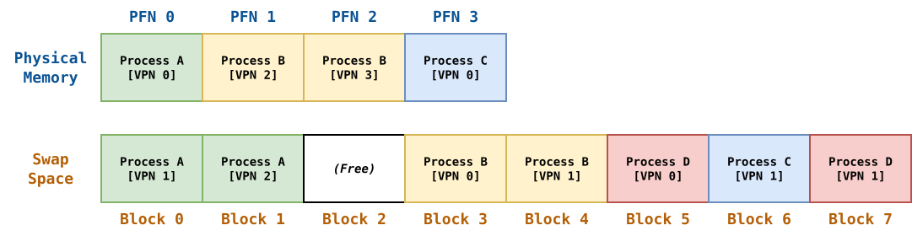
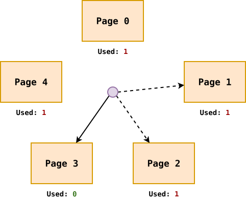

Logistics¶
-
Interview 03: Memory Bugs in the context of
malloc. -
Study Guide 03: Review.
Review: Virtual Memory (Lies)¶
- Dedicated ownership: MMU enforces
- Contiguous: Paging makes it appear that way
- Infinite: Swapping gives us more (slower) memory
Swapping: Questions¶
-
How does the operating system provide the illusion of infinite virtual memory?
-
How does the operating system handle page faults?
-
What exactly is thrashing?
Virtual Memory: Infinite Allocation¶
#include <stdio.h>
#include <stdlib.h>
#define N 30
int main(int argc, char *argv[]) {
while (1) {
int *a = malloc(sizeof(int)*(1<<N)); // Allocate memory on the heap
for (int i = 0; i < (1<<N); i++) { // Use Allocation
a[i] = i;
}
}
return 0;
}
Observations:
127TBvirtual memory.- Physical memory isn't actually allocated until used.
Discussion:
-
Most Physical Memory (500MB) is due to Page Table!
-
Replace
mallocwithcalloc->RESgrows, but not all the way (OS does not actually zero until necessary). -
COW:
fork()conceptually copies address space, but underneath just has a reference and only copies on modification.
Memory Hierarchy¶
| Fast | Registers | Expensive, Small | |
| Cache | |||
| RAM | |||
| HD | |||
| Slow | Cloud | Cheap, Large |
Swapping: Overview¶
The swap space is a portion of disk reserved for moving pages back and forth:

-
Used to hold pages of currently running processes.
-
Present bit in PTE tracks whether or not page is in physical memory.
Observations:
-
Block size same as page size.
-
Process D is probably suspended/blocked/low priority.
Analogy:
- Shoes by the door (used most, working set) and in the closet (least recently used)
Swapping: Memory Access¶
-
Extract VPN from virtual address
-
If VPN in TLB
- Then perform checks and access physical memory
Otherwise, read PTE from page table
-
If page is not valid, then raise Segmentation Fault
-
If page is protected, then raise Protection Fault
-
If page is present
- Then update TLB and retry
Otherwise, raise Page Fault
Swapping: Page Replacement¶
Ideally, we would minimize the amount of misses, and thus want to evict pages that will be accessed the furthest in the future.
Unfortunately, this is difficult to determine, so we consider different replacement policies:
-
FIFO: Pretty poor since it doesn't consider importance of page.
-
Random: Sometimes really good, sometimes really bad, typically mid.
-
LRU: Mostly optimal but expensive, so need to approximate it.
Swapping: Clock¶
The hardware sets a used bit whenever a page is accessed.
-
OS arranges pages in a circular list.
-
A clock hand points to current page.
-
When replacement occurs, OS checks use bit of current page:
-
If
1, clear bit and go to next page. -
Otherwise, evict.
-

- Start at Page 1, clear it.
- Go to Page 2, clear it.
- Go to Page 3, evict it.
Swapping: Page Selection¶
To decide when to bring a page into physical memory, the operating system can employ two strategies:
-
Demand paging: Bring pages into physical memory when they are accessed.
-
Prefetching: Bring pages into physical memory ahead of time.
Swapping: Thrashing¶
Suppose the amount of memory requested by running processes (ie. working set) exceeds the available physical memory...
- Evict page out
- Swap page in
- Evict page out
- Swap page in
- Evict page out
- Swap page in
Working set: amount of memory process requires in given time interval.
This condition of constantly swapping is called thrashing (livelock).
Why swap? Alternative is OOM (availability is important).
Swapping: Laziness¶
Demand Zeroring¶
Rather than automatically allocating a page and zeroing it when it is requested, the OS waits until the page is actually accessed to clear it.
Copy-on-Write¶
Rather than copying a page from one address space to another, share the page in read-only mode and only perform the copy if a write occurs.